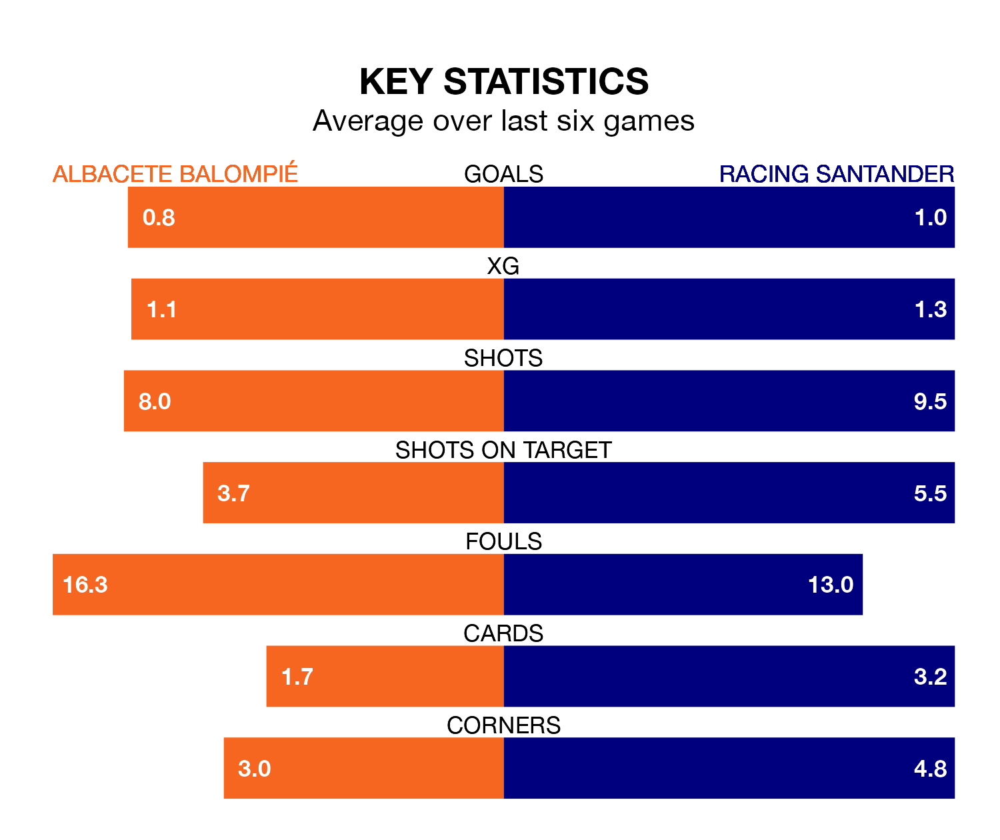

Albacete Balompié face Racing Santander at the Estadio Carlos Belmonte on Sunday lunchtime looking to secure a first win in eight Segunda División games.
Albacete have lost four and drawn three matches since they last earned three points – against Villarreal B on December 8.
They face a Racing side who have won three and drawn one over that time.
With 40 goals in 26 games so far this season, Racing are the league's joint-second-highest scorers with 1.5 goals per game. But they are conceding more than average too, letting in 36 goals at a rate of 1.4 per game.
Albacete, meanwhile, are average scorers, with 1.1 goals per game. They have conceded 1.5 goals per game.
The hosts are 20th in the table after 26 games, of which they have won six and drawn nine, earning 27 points.
The away side are 12 places ahead of Albacete in eighth, with 11 wins and six draws putting them on 39 points.
In Gerard Fernández Castellano, Racing have one of the league's sharpest shooters so far this season. He has notched 12 goals in 25 appearances, to sit second in the scoring charts.
His goal rate of one every 146 minutes is much quicker than that of Manuel Fuster Lázaro, Albacete's top scorer with a goal every 438 minutes, and a total of five goals in 26 games.
In the last 10 years, Albacete and Racing have played each other on nine occasions. Albacete won three of them, Racing four, and they drew twice.
On average, Albacete scored 1.1 goals and Racing 1.4 in those matches.
Their last meeting was on September 23, when Racing won 2-1 at home.
Albacete's last match was on Monday, a 0-0 draw against Real Valladolid.
Racing beat RCD Espanyol 2-0 last time out, on February 10, with Fernández Castellano and Juan Carlos Arana Gómez on the scoresheet.
Updated: 09:02 (UTC), 13/02/24